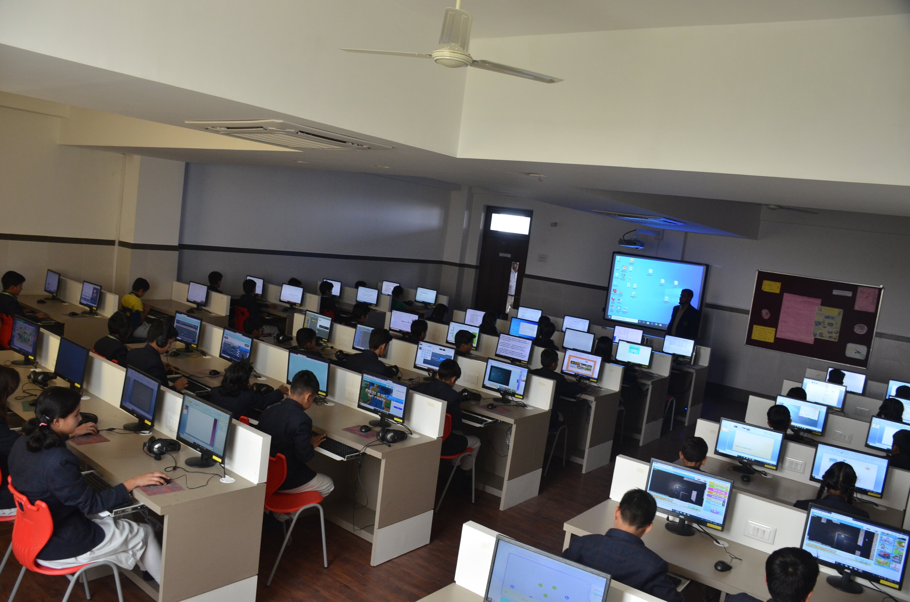
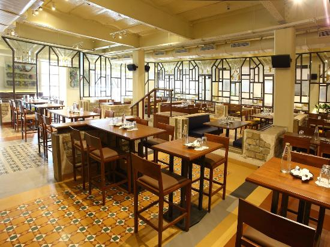

School Campus

School Library
The Libraries of the school are stocked with 30000 books of different genres. In addition e-books (70000) and audio visual CDs are made available to the students on personal computers.

School Computer Lab
here are three computer laboratories for imparting basic computing skills to the primary and middle school students and basic computer programming to students of standards IX-XII. The subject Computer Studies is optional for students of standards IX-XII and compulsory for students of standards I-VIII.

School Canteen
The Canteen, managed by the intract club of the school, atempts to provide tasty and wholesome snacks and meals to the students. A Canteen sub committee set up by the Parent Teacher Association ensures high standards of quality, hygiene and nutrition.